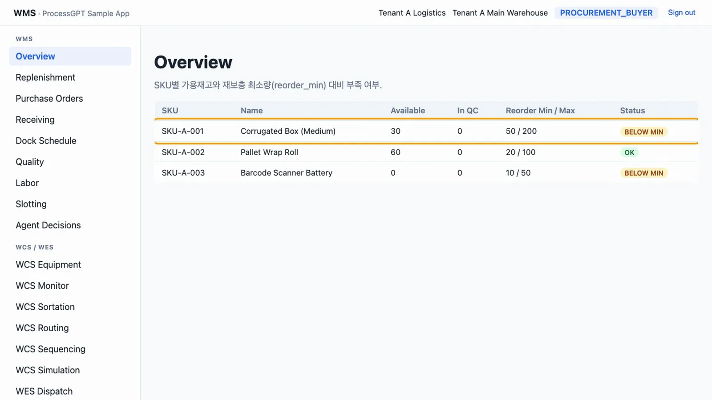
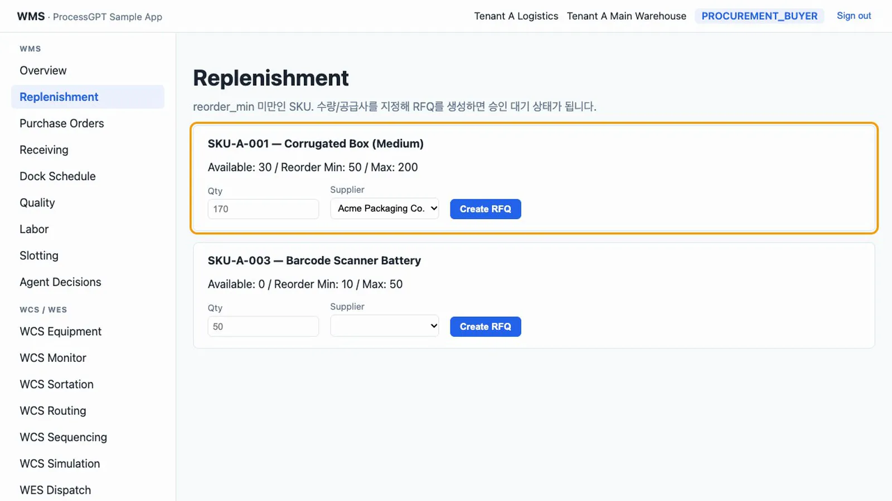
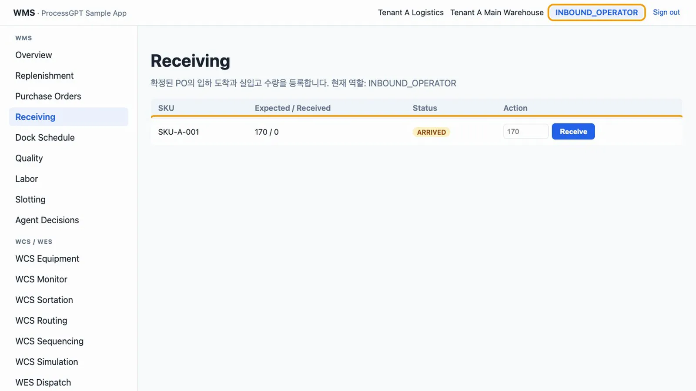
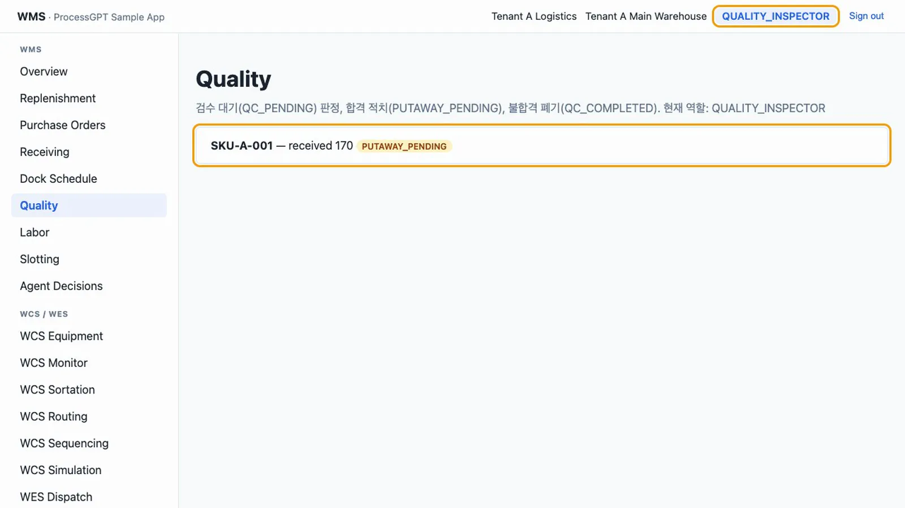
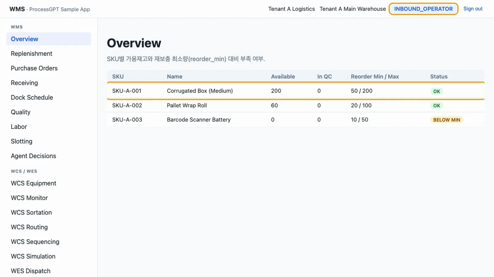
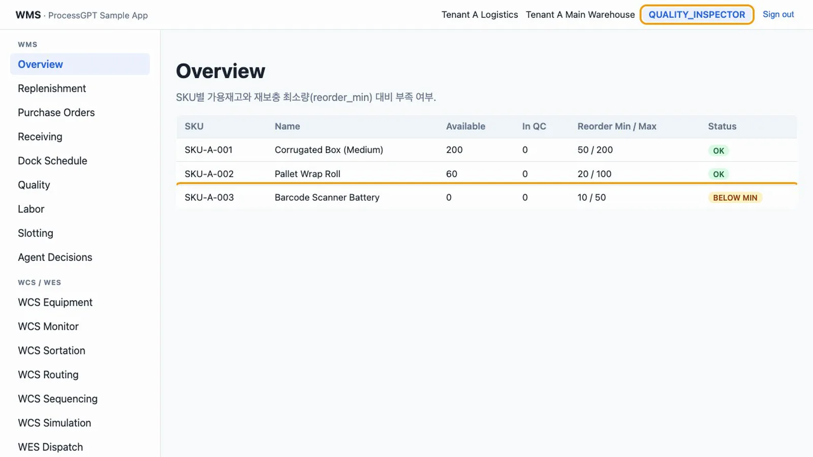
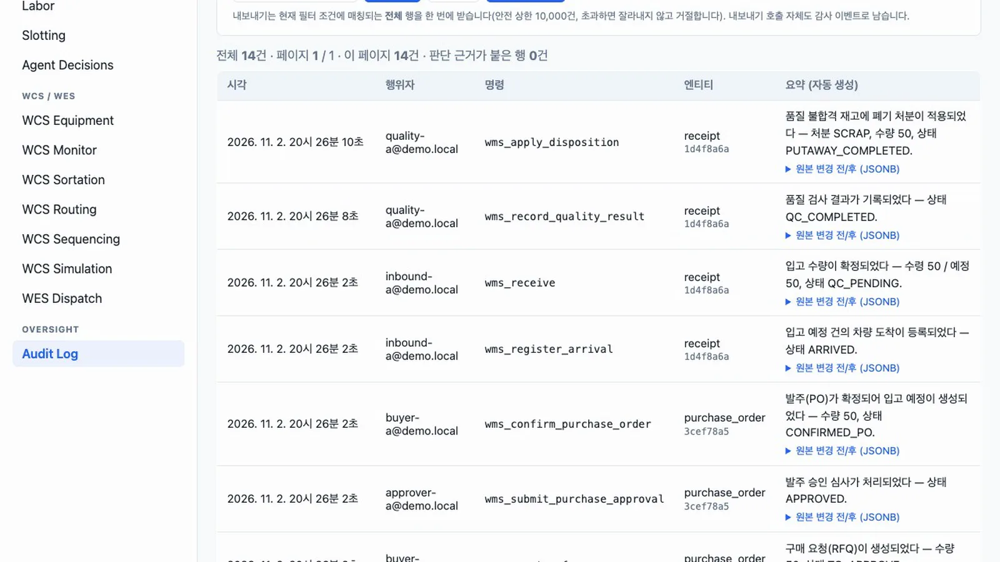

부족한 재고 하나를 RFQ, 승인, PO, 도착, 입고, 품질 검사, 적치까지 역할을 바꿔 가며 채웁니다. 불합격 폐기와 감사 로그도 확인합니다.
무엇을 · 왜#
재고가 최소 기준 아래로 내려가면 구매 담당자, 승인자, 입고 담당자, 품질 담당자가 차례로 같은 문서를 넘겨받습니다. 각 단계는 데이터베이스 함수(RPC) 하나이고, 함수가 역할과 문서 버전을 검사합니다. 받은 물건은 품질 검사를 통과하고 적치가 끝나야 가용 재고가 됩니다.
샘플의 범위
- 화면 이름은 RFQ지만 견적을 비교하는 화면은 없습니다. RFQ를 만들면 바로 승인 대기(
TO_APPROVE) 문서가 됩니다. - 도착, 입고, 품질, 적치는 사람이 누르는 대로 기록합니다. 스캐너나 실물 확인과 연결되어 있지 않습니다.
- 값은 시드 데이터 그대로입니다. 앞 장의 역할 비교에서 문서를 만들었다면
cd supabase && supabase db reset으로 처음 상태로 되돌린 뒤 따라 하세요.
따라 하기#
- 부족 확인.
buyer-a@demo.local로 로그인합니다. Overview에서SKU-A-001은 Available 30, Reorder Min / Max 50 / 200, 상태BELOW MIN입니다.
Overview의 부족 재고 - RFQ 만들기. Replenishment를 엽니다. 최소 기준 아래인 상품만 모여 있습니다.
SKU-A-001카드의 Qty를 비워 두면 최대 200에서 현재 30을 뺀 170이 들어갑니다. Supplier에서Acme Packaging Co.를 고르고 Create RFQ를 누릅니다.
Replenishment - 문서 확인. Purchase Orders에
SKU-A-001, Qty 170,TO_APPROVE, Version 1인 문서가 생깁니다. 구매 담당자에게는 승인 버튼이 없습니다.
승인 대기 문서 - 승인. Sign out을 누른 뒤
approver-a@demo.local로 로그인해 Purchase Orders에서 Approve를 누릅니다. 상태는APPROVED, Version은 2가 됩니다. 버전은 두 사람이 같은 문서를 동시에 고치는 일을 막습니다. 화면을 연 뒤 다른 사람이 먼저 고쳤다면CONFLICT오류가 납니다.
승인됨 - PO 확정.
buyer-a@demo.local로 다시 로그인해 Confirm PO를 누릅니다. 상태는CONFIRMED_PO, Version 3입니다. 이때 입고 문서가 자동으로 만들어집니다. - 도착 등록.
inbound-a@demo.local로 로그인해 Receiving을 엽니다. Expected / Received는 170 / 0, 상태는EXPECTED입니다. Register Arrival을 누르면ARRIVED가 됩니다.
도착 등록 - 입고. 수량 칸에 170을 넣고 Receive를 누릅니다. 비워 두면 예정 수량이 들어갑니다. 수량은 170 / 170, 상태는
QC_PENDING이 됩니다. - 품질 칸 확인. Overview를 봅니다.
SKU-A-001의 Available은 그대로 30, In QC가 170입니다. 받은 물건은 아직 가용 재고가 아니므로 상태도BELOW MIN그대로입니다.In QC 170 - 합격 처리.
quality-a@demo.local로 로그인해 Quality에서 Pass를 누릅니다.PUTAWAY_PENDING으로 바뀝니다. 적치 버튼은 품질 담당자에게 보이지 않습니다.
합격 처리 - 적치.
inbound-a@demo.local로 로그인해 Quality에서 Putaway (→ Available)를 누릅니다. 목록이 비면서 「대기 중인 검수/처분 건이 없습니다」가 보입니다. - 결과 확인. Overview에서
SKU-A-001의 Available은 200, In QC는 0, 상태는OK입니다.
Available 200 - 불합격 처리.
SKU-A-003을 Qty 50으로 위와 같은 순서로 Receive까지 진행합니다.quality-a@demo.local로 로그인해 Quality에서 Fail을 누르면QC_COMPLETED가 되고, 폐기 사유 코드(예:DAMAGED)를 넣어 Scrap을 누르면 끝납니다. Overview에서SKU-A-003의 Available은 0 그대로입니다.
폐기 뒤 Overview - 감사 로그.
auditor-a@demo.local로 로그인해 Audit Log를 엽니다. 위의 모든 단계가 시각, 행위자, 명령, 한국어 요약으로 남아 있습니다. 예를 들면 「입고 수량이 확정되었다 — 수령 50 / 예정 50, 상태 QC_PENDING.」입니다. 두 흐름을 끝까지 진행하면 14건이 남습니다.
감사 로그
확인 문제#
입고 직후 Overview의 Available이 왜 늘지 않나요?
받은 수량은 품질 칸(In QC)에 표시됩니다. 품질 합격 뒤 적치가 끝나야 재고 원장에 가용 재고로 기록됩니다.
구매 담당자가 자기가 만든 문서를 승인할 수 있나요?
할 수 없습니다. 승인은 PURCHASE_APPROVER나 WMS_ADMIN만 할 수 있습니다. 화면에 버튼이 없을 뿐 아니라 함수도 거부합니다.
Fail을 누른 뒤 무엇을 더 해야 하나요?
문서는 QC_COMPLETED에 머뭅니다. 폐기 사유 코드를 넣고 Scrap을 눌러야 끝납니다. 사유 코드가 없으면 폐기할 수 없습니다.